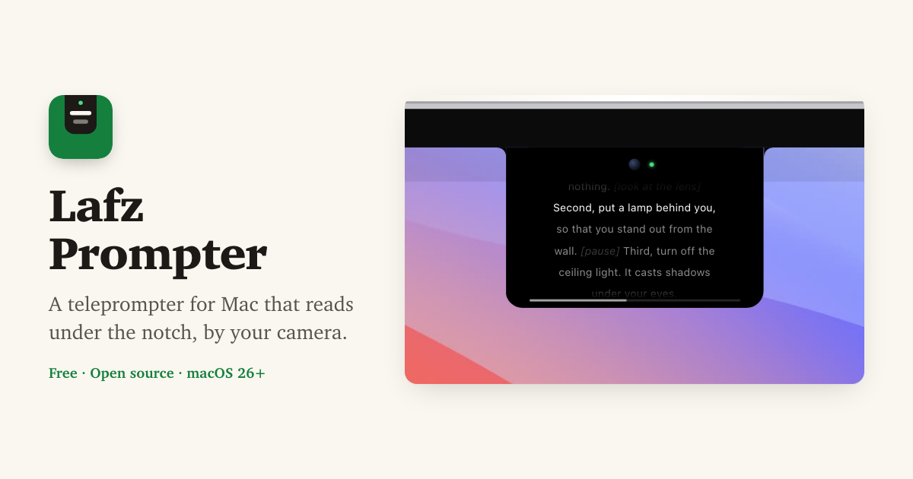

A teleprompter your audience can't see
When you share your whole screen, anything on it goes to everyone watching, including your notes. Lafz Prompter can keep your notes on your screen and out of the share.

How it works
macOS lets an app mark a window as private, so that screen capture leaves it out. Zoom, Google Meet, Teams and screen recorders capture the screen through macOS, so they get the picture without that window. Lafz Prompter marks its window this way when you turn the setting on, and always while Call Assist is running.
You see the prompter as usual. The people watching your share see what is underneath it.
Turn it on
- Download Lafz Prompter (free) and open it.
- Open Settings from the menu bar icon, go to Behavior and turn on Hide from screen recordings.
- Load your notes with ⌃⌥V or ⌃⌥O, and press ⌃⌥P to scroll.
Check it yourself
Before it matters, make a 10 second screen recording with ⇧⌘5 while the prompter is showing, then play it back. The prompter should be missing from the video. In Zoom or Meet you can also start a share in a test meeting and look at the preview.
What it can't hide
It hides the window from screen capture, nothing more. A phone or second camera pointed at your screen will still see it, and so would a capture app that doesn't use the macOS capture system. Your face is on camera too, so reading still shows if you look far from the lens. Keeping the prompter under the notch, next to the camera, takes care of that.
More guides
Free and open source · macOS 26+